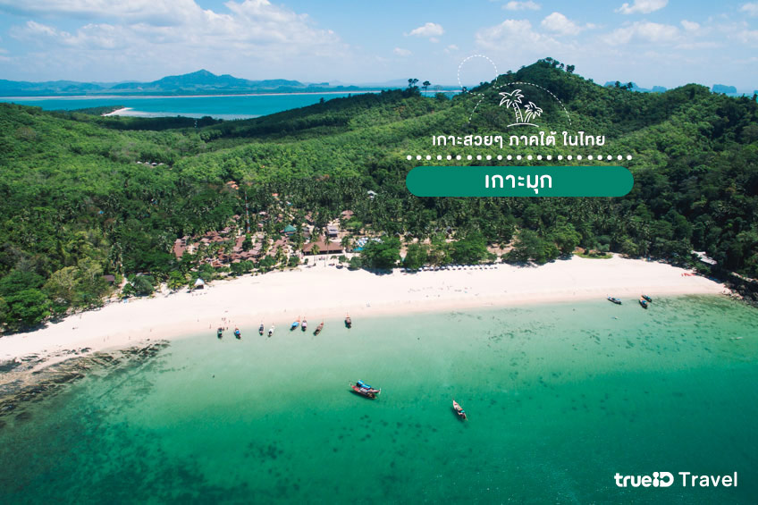
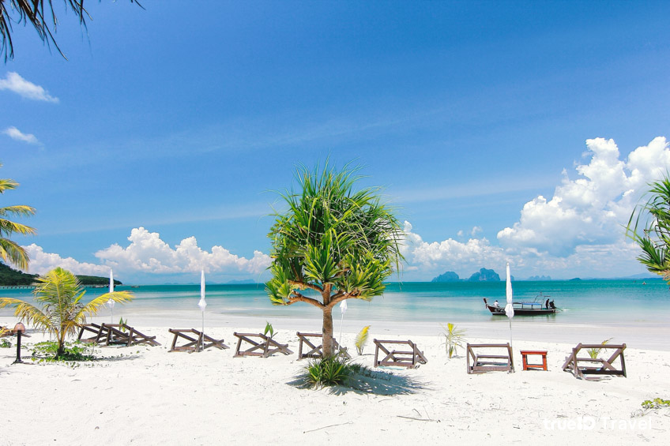

เกาะมุก ตรัง
เกาะมุก ที่นี่เป็นเกาะที่ใหญ่เป็นอันดับที่ 3 ของทะเลเมืองตรัง และยังคงความเงียบสงบ ความเป็นธรรมชาติที่อุดมสมบูรณ์ไว้เป็นอย่างดี เป็นเกาะเล็กๆที่เต็มเปี่ยมไปด้วยวิถีชีวิตของผู้คน วิถีชาวประมงพื้นบ้านจะสามารถพบเห็นได้ทั่วไปจากที่นี่
บนเกาะมุกมีชายหาดสวย 2 หาดด้วยกันที่ต้องห้ามพลาด ก็คือ หาดฝรั่งและหาดสบาย ทั้ง 2 หาดเป็นหาดทรายสีขาวนวล และมีความเงียบสงบ เป็นหาดที่เน้นความชิลๆสบายๆ